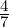

Introduction To Statistics For Data Science Workshop
1
Dr. Ric Crossman____________________________________________________________________
The submission deadline for this assignment is 12pm Monday 23rd October. You will need to submit via Gradescope, via the Ultra page. I strongly recommend submitting at least a few hours ahead of the deadline, in case of technical issues.
Each of the four questions carries similar but not identical weight.
Question 1
A series of multiple choice questions.
A short e-survey is released, asking the following question: “How many cups of tea do you drink a day?”. The available answers were “0”, “1”, “2“, and “3 or more”.
What type of data is the e-survey collecting?
Nominal
Ordinal
Discrete
Continuous
Data is collected relating to the continent of origin of students at Durham. The data is to be shown graphically to the University Council, to help them understand where students come from most often, and least often.
Council will want to compare numbers between continents - they are not interested in the proportion each continent of origin makes up of the whole of the student body. Which of the following graphs would be the best method for displaying this data?
Bar chart
Pie chart
Histogram
Stem and leaf diagram
In a recent survey, 46% of the British population said they preferred dogs to cats. In another recent survey, 12% of the British population listed jazz as one of their favourite musical genres.
Assume that whether a person prefers dogs to cats is independent of whether they consider jazz one of their favourite musical genres. What probability, expressed as a percentage, should we give to the event that a British person prefers dogs to cats and considers jazz one of their favourite musical genres.
58%
5.52%
55.2%
5.80%
Consider an outcome space Ω = {1,8,15,35,69,732,983}. Let A = {1,8,69,983} and let B = {1,8,15,35,69}.
Assuming a uniform probability distribution on Ω, which of these is the probability that A AND B occur?

A random variable U is defined with the probability density function below:
Which of the following is the value of P(U > 0.30)?
0.09775
0.03
0.70
0.9775
Question 2
Using the ToothGrowth data set in R:
Find the modal tooth length across the entire data set.
Find the mean tooth length for guinea pigs who were given their vitamins via orange juice.
Create a diagram in R of two box-and-whisker plots, one showing tooth length for guinea pigs given their vitamins via asorbic acid, and one showing tooth length for guinea pigs given their vitamins via orange juice. The box-and-whisker plots should be adjacent to each other, using the same axis, to enable easy comparison.
Using the box-and-whisker plots created in Question 1.2.3, comment on which of the two vitamin delivery approaches is more effective in promoting tooth growth. Justify your answer.
Question 3
A company that produces party poppers claims on their website that only 0.6% of their party poppers will fail to go off when the string is pulled.
The company sells party poppers in boxes of 200. What is the expected number of party poppers which will fail to go off in a box?
I decide I want to represent the number of party poppers which fail to go off in a box using a random variable, X.
Which distribution would be the most appropriate to use for X? Give both the name of the distribution, and the value of the parameters assuming the company’s claim on their website is correct.
What assumptions regarding the party poppers would need to hold in order to justify that choice of distribution?
I order a box for myself, but due to an administrative error, the box arrives containing not 200 party poppers, but 2.
Define the distribution for Y , the random variable representing the number of party poppers which fail to go off in my box of 2, assuming the claim on the company’s website is correct.
Find E(Y ) and Var(Y ), under the assumptions needed for Question 1.3.2 b), and under the assumption that the claim on the company’s website is correct. NOTE: You will need to show your working.
Part D
Let X ~ Pois(0.4), and let Y ~ Pois(λ). Find:
P(X = 4).
P(X < 3). NOTE: You will need to show your working.
An algebraic expression for P(Y = 4|Y ≥ 3). NOTE: You will need your working.